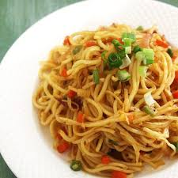
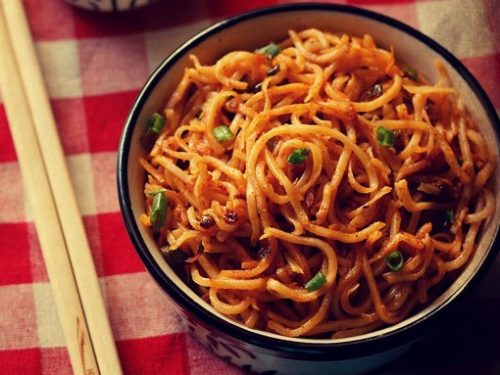
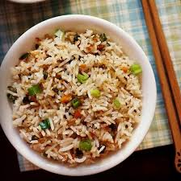
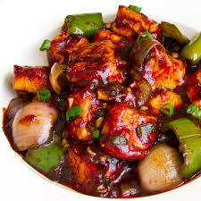

Chinese recipes
Veg Chowmein

Ingredients:
- 1 Packet Noodles
- 1 Onion Sliced
- 1 cup chopped Lengthwise Vegetables(Broccoli, Carrots, Zucchini, BabyCorn, Bellpepper, Capsicum)
- 1 tblsp Ginger Garlic Paste
- 2 tbsp Soya Sauce
- 1 tbsp Vinegar
- 1/2 tblsp Tomato Ketchup
- 1 tbsp Green Chili Sauce
- Salt to taste
- 1/4 tsp Black Pepper Powder
- 2 tbsp Oil
Procedure:
- Boil Noodles in enough water with salt and 1 tblsp of oil to avoid sticking.
- Take care do not overcook.
- Strain Noodles in cold water 2-3 times and drain water and set aside .
- important thing to remember is to cookon high flame constantly. This gives the noodles a burnt smoky taste that you get from the street side shops.
- Heat oil in a wok/kadhai and add sliced onions and stir fry for 20-30 seconds.
- Add minced ginger-garlic.
- Now add all other vegetables and stir fry for 2 minutes.
- Add salt and black pepper and mix well. Now add boiled noodles and mix well (take care that noodles don't break) .
- Add vinegar, green chili sauce, ketchup and soya sauce and stir fry for a minute on High flame.
- Serve the vegetable chowmein hot
Schezwan Noodles

Ingredients:
- 1 packet hakka veg noodles (150 gms)
- 1 cup cabbage
- 1 large carrot
- 1/2 cup capsicum
- 2 Green part spring onions
- 5 French beans
- 1 tsp ajinomoto
- 1 tsp garlic paste
- 1 tsp Soy Sauce
- 4 tbsp oil
- Schezwan Sauce
- Salt to taste
- 10 Dried Whole Red Chillies
- 1 tblsp Seasame Oil or Any Oil
- 1 tsp sugar
- 3 tblsp Vinegar
- 1 tblsp finely chopped Garlic
Procedure:
- First prepare the sauce. Soak the dry red chillies for 6 - 7 hrs. Remove the water. In a blender make a fine paste of the soaked red chillies and garlic. You may use 1 tblsp of water to make a smooth paste. Now heat the sesame oil in a pan to the smoking point and then add the chilly garlic paste, vinegar, sugar and salt. Allow it to cool.
- For boiling the noodles take 8 cups of water and 1 tsp of oil in a large pan and boil it. When it starts boiling, add noodles in it and boil them for 2 minutes. Switch off the gas and strain the water through a strainer.
- Wash it with cold water for 3 - 4 times and immediately strain it. Washing the noodles with cold water keeps the noodles from sticking together.
- Now pour 1 tsp oil on the noodles and with hands mix well. Ensure all the noodles are smeared with oil. Keep it in a strainer for 10 minutes so that the water drains off from the noodles completely.
- Chop all the vegetables - carrot, cabbage, french beans, spring onions in thin strips or juliennes.
- Heat oil in a frying pan on a high flame. Add garlic paste to it. Cook it for 1 minute then add vegetables and stir fry them. Do not overcook. They should remain crunchy.
- Now add 2 -3 tblsp of already prepared schezwan sauce.
- Add noodles, salt and ajinomoto. Mix well.
- Stir for 2-3 minutes. Garnish it with chopped green spring onions.
- Serve hot.
Veg Fried Rice

Ingredients:
- 2 cups Rice
- 3 tbsp Oil
- 100 gms Beans Finely Chopped
- 2 Carrot Finely Chopped
- 1 Onion Sliced
- 100 gms Cabbage Finely Chopped
- 2 Spring Onions Finely Chopped
- 2-3 Green Chilies cut lenghtwise
- 1 tsp Ginger Chopped Finely
- 1 tsp Garlic Finely Chopped
- 2 tbsp Soya Sauce
- Salt & pepper to taste
Procedure:
- Pick, wash and soak the rice in enough water for 10-15 minutes and drain.
- Boil water, add rice and little salt.
- Cook uncovered on low heat till rice is tender.
- Take care not to overcook the rice. Each grain of rice should be separate.
- When rice is done, drain and add soom cold water and drain again using a large seive and set aside.
- Heat oil in a kadhai / large pan and stir fry all the chopped vegetables.
- Cook for 3-4 minutes.
- Take care that vegetables are not overdone, they should be crisp.
- Mix salt and pepper to taste.
- Add the cooked rice and mix well. Now mix the soya sauce to it.
- Cook the chinese fried rice for 2-3 minutes and serve hot.
Paneer Chilly

Ingredients:
- 500 gms Paneer or Cottage Cheese (cut in cubbes)
- 2 Onions (Sliced)
- 5-6 Garlic Cloves (chopped)
- 1 Bunch Spring Onions (chopped)
- 3 tblsp Tomato Ketchup
- 1 tblsp Chilli Sauce
- 2 tblsp Soy Sauce
- 1 tsp Vinegar
- 1 Green pepper (cut in pieces)
- Salt to taste
- Oil
Procedure:
- Heat oil in a wok or kadai.Add onion,garlic and spring onions.
- Fry till they turn soft.
- Add ketchup,chilli sauce,soy sauce & vinegar.Cook for 2-3 minutes stirring continously.
- Add paneer cubes & bell peppers.Stir well.Add salt as required.
- Serve hot.